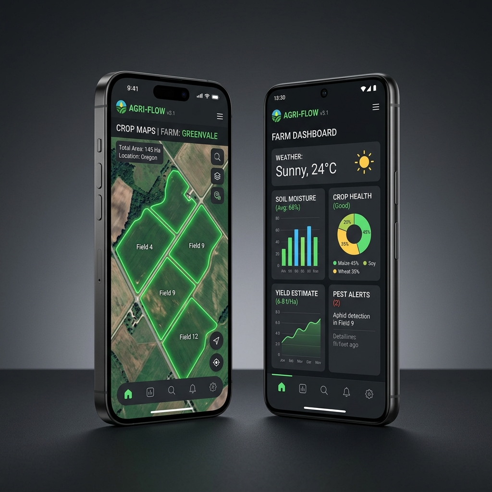
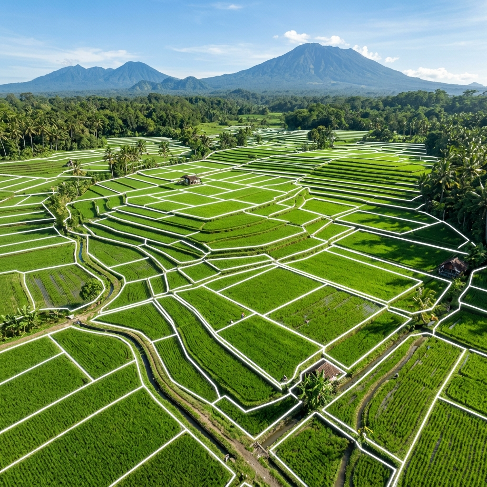
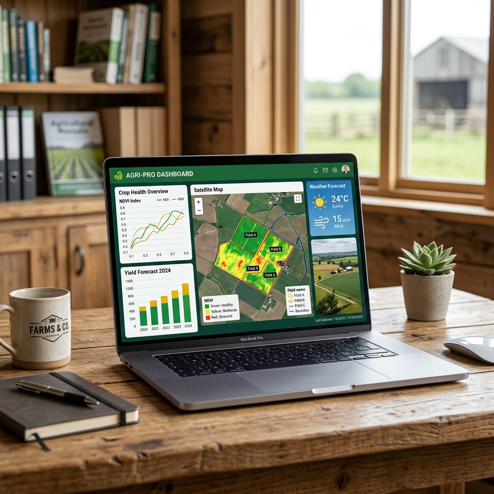
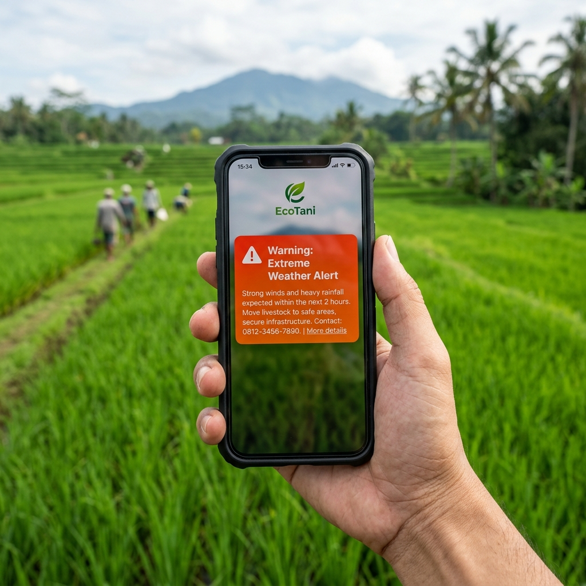

Pantau kesehatan lahan dan dapatkan peringatan dini cuaca ekstrem langsung dari satelit di seluruh pelosok Indonesia.
Mulai Plotting Lahan
Sektor pertanian adalah yang paling rentan terdampak oleh krisis iklim. Pola cuaca yang tidak menentu, pergeseran musim tanam, hingga ancaman kekeringan mendadak sering kali menjadi dalang utama gagal panen massal yang merugikan petani secara materiel dan waktu.
Pemantauan cuaca akurat dan terpercaya, berkontribusi penting meminimalisir kerusakan tanaman tradisional.
Penyusutan kandungan air tanah yang lambat-laun dapat menyebabkan penurunan hasil panen secara massal.
Kami menghadirkan platform mitigasi berbasis data geospasial untuk membantu Anda mengambil langkah tepat sebelum terlambat.

Tandai dan petakan koordinat sawah Anda dengan mudah langsung di peta satelit. Sistem kami akan memetakan batas wilayah lahan Anda secara presisi.

Pantau indeks kesehatan vegetasi tanaman (NDVI) dan tingkat kelembapan tanah melalui sensor satelit pemantau bumi terbaru di lapangan secara otomatis.

Dapatkan rekomendasi aksi dan notifikasi darurat secara instan jika sistem mendeteksi adanya risiko kekeringan ataupun curah hujan di luar batas normal.
Kami menghadirkan platform mitigasi berbasis data geospasial untuk membantu Anda mengambil langkah tepat sebelum terlambat.
Daftar gratis di platform kami, cari lokasi sawah Anda secara presisi di peta digital.
Gunakan alat bantu gambar peta untuk menggaris sudut-sudut sawah Anda. Cukup klik dan hubungkan titiknya untuk membentuk polygon.
Cek kondisi tanah secara real-time di dashboard dan aktifkan notifikasi whatsapp/email agar langsung mendapat peringatan jika cuaca buruk mendekat.